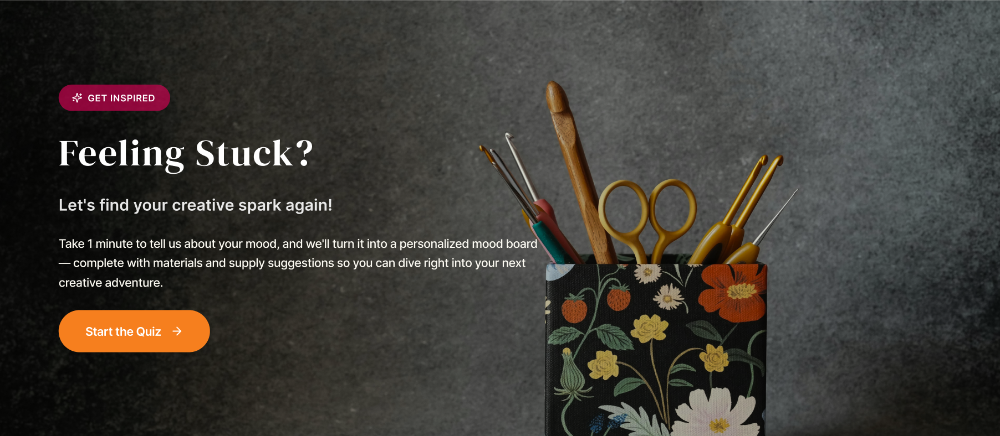
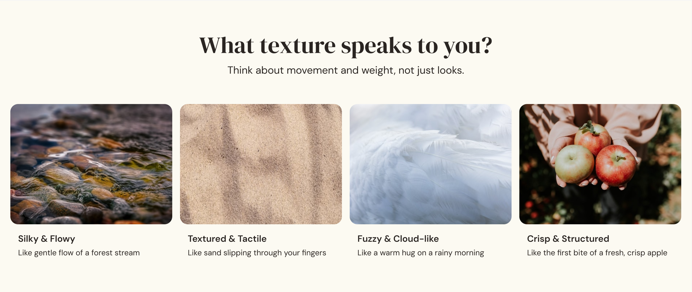
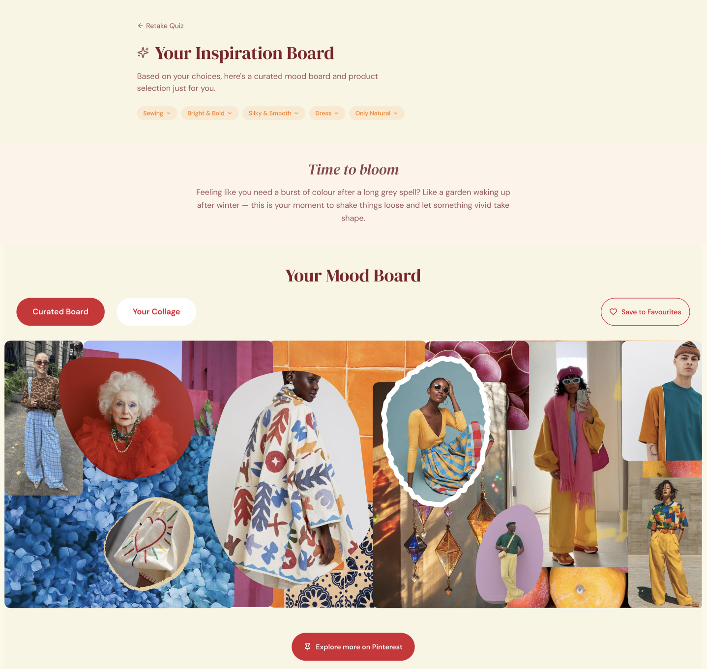
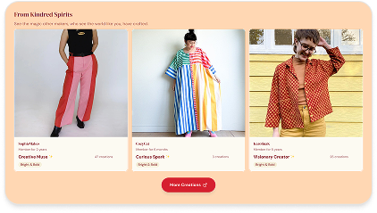

From dense grid to guided start
Instead of hundreds of categories and specialist filters, an inspiration quiz doubles as both filter and starting point — guiding people who don’t yet know what they want to make.

01
Reimagining a craft supply shop to feel more like an inspiring studio — shifting from a product catalog into a place that supports inspiration, creativity, and reflection.
CONTEXT
Karnaluks is a craft supply store with a wide range of hobbies; the physical shop is loved, but the website felt purely transactional and overwhelming.
GOAL
Rethink the website through emotional design — from catalog to a place that supports inspiration, creativity, and reflection.
WHAT I DESIGNED
A before-and-after homepage concept and clickable prototype — so people can start from inspiration and intent, not only from material categories.
KEY IDEA
A craft store is more than a list of products — it's a starting point for someone's creative journey.
I reviewed the live site, then pressure-tested assumptions with a short hands-on exercise outside my usual craft.
Instead of hundreds of categories and specialist filters, an inspiration quiz doubles as both filter and starting point — guiding people who don’t yet know what they want to make.


Craft-shop jargon was swapped for language anyone could relate to, so beginners feel welcome and actually understand what they’re looking at.
A personalised mood board gives focus, turning aimless scrolling into intentional browsing — users see a path forward instead of feeling lost.


Real work from other crafters shows what’s possible — seeing the outcome makes starting feel achievable instead of intimidating.
An Inspiration Diary archives saved ideas over time, helping build the crafter’s identity as a creative maker and keeping momentum between sessions.